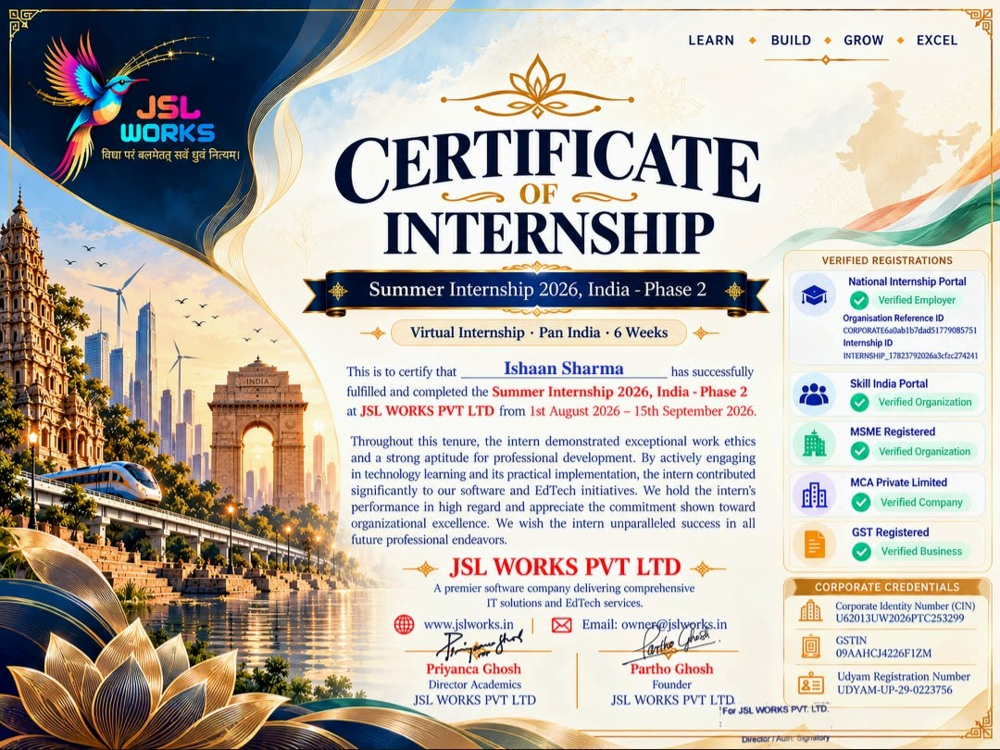

B.Tech AI/ML student building production-style LLM applications, with hands-on experience in RAG, tool-calling agents, and FastAPI backends.
B.Tech AI/ML student building production-style LLM applications, with hands-on experience in RAG, tool-calling agents, and FastAPI backends. Shipped a RAG-based medical knowledge assistant, a LangGraph job-search agent, and a self-healing LangGraph coding agent, and built a RAG incident chatbot as a team lead during a summer internship. IBM-certified in RAG & Agentic AI, with a grounding in classical ML (feature engineering, model evaluation, SHAP) and Streamlit deployment. Seeking an entry-level AI, GenAI, Agentic AI, or Forward Deployed Engineer role.
